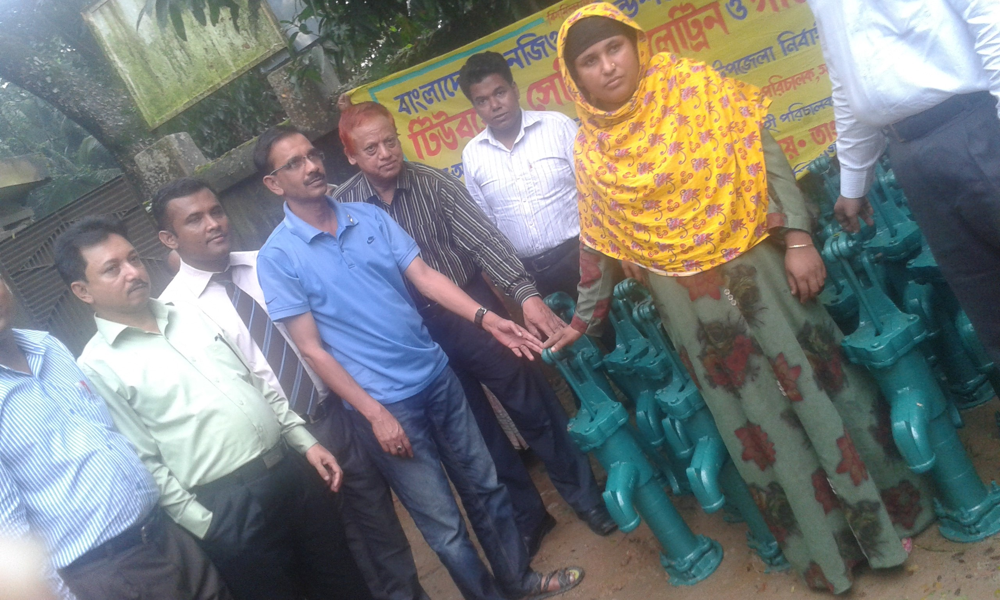
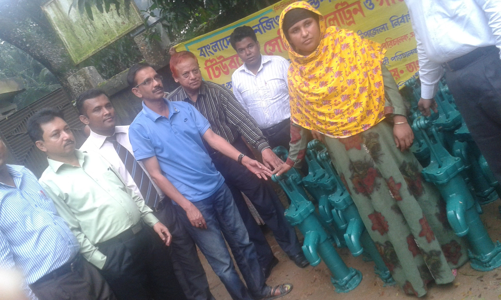

- development09@yahoo.com |
- +8801712110670

Development for Society operated a project titled, Eradication of Hazardous Child Labor in Bangladesh by the financial support of Ministry of Labor and Employment (MOLE). The project successfully ended in April, 2009. As successful completion of the project, DS has been awarded a certificate with a successful completion of the project by the Ministry of Labor and Employment ( MOLE). The project aimed at combating hazardous child labor in Bangladesh. To this end, the project maintained a network of 10 working and street children’s schools in the slum areas of Tongi Thana of Gazipur District. The project has provided non-formal primary education to 300 working & street children. Among them, 159 were girls and 141 ware boys. After graduation from non-formal primary schools for 24 months, the learners were provided with occupational skills training. The skills training included tailoring and embroidery. The final evaluation of the project suggests that the enrolled boys and girls have gained the functional skills of reading, writing and simple arithmetic. The parents are happy with the project impact as they visualize and dream about a more human future for their children. The occupational skills training equipped the boys and girls to be self-employed or to be employed in garments and tailoring shops.


The Cow and Goat Rearing Training Centre for Poor Women has been set up with the financial support from the Embassy of the Federal Republic of Germany. The Training Center is about 33 x 26 feet. The Center is built on two rooms. One room is used as office room for trainers and the other room is used as training hall room. The training center is equipped with necessary training materials like chairs, tables, black board, white board, machines, equipment, furniture & fixtures etc. This is a full-fledged training centre and it is able to arrange and conduct different courses, workshops, seminars, meetings in an effective manner. It may be noted that the training center was a widely felt need of the beneficiaries and the staff-member of Development for Society. It may be noted that Development for Society has been using the best use of the training center in organizing human development and occupational skills development courses for its beneficiaries and staff-member. Development for Society also organizes staff-meeting, staff- conference and community meeting in the training center. The training center has been appreciated by many visitors, local elite and the CSO members. The training center was inaugurated by Ms. Isolde Rausch, Attachee, and Embassy of the Federal Republic of Germany. The experience of training center suggests that it can cover the training needs of the group members of DS only. During the time, there has been a large demand from the unemployed young boys and girls. They feel the need of equipping themselves in vocational trades so that they can be either self-employed or better employed in the country or overseas countries.
 

With the financial support from Bangladesh NGO Foundation, Development for Society has been implementing the above-mentioned project in Miah Bazar, Chouddugram Upazila of Comilla district. The project covered the following unions: Uzirpur, Gholpasha, Kalikapur, Sreepur, and Kashinagar. The project aims at promoting safe drinking water, providing sanitation education and extending kitchen gardening in the community. A total of 191 tube- wells were distributed among the project participants. Development for Society provided with necessary training on maintenance and repairing of the tube-wells of the caretakers
104 low- cost latrine constructions were provided to the project participants. 2900 saplings are distributed under the project. It may be noted that the project brought about improvement on sanitation and household environment of the poor and the women participants. As a result, water- born diseases are disappearing in the project area.
1250 women group members received 1250 sapling and 1485 women group members received vegetables seeds. Education and motivation on pure drinking water, sanitation, plantation and kitchen gardening continued to the women participants for such activities as they are the direct beneficiaries from the economic standpoints as well as nutritional development. Moreover, the women picked up the idea of using better quality seeds for better results in the future. The project also improved their vegetables consumptions adding to nutritional values to daily diets.
Development for Society believes that education is one of the pre-conditions and pre-requisites for human and social development and it is a basic human right. Therefore, with the support of BRAC, DS has been implementing non-formal primary education program in Mia Bazar, Chouddugram Upazila of Comilla district. It may be noted that 30 NFPE schools are graduated. In the past year, 900 children were graduated from 30 NFPE schools. Among the graduated children, about 73% were girls and rest of children ware boys. Realizing the fact that female literacy is very important for women empowerment as well as for poverty alleviation, Development for Society always promotes the enrollment of more girls in the NFPE schools.
The school is set up within the proximity of the learners’ residences. The teachers are selected from the community and they are provided with adequate training on non-formal methodologies. The class size is small that can accommodate 30 learners under each teacher. The BRAC non-formal education method is learner’s centered, non-directive and non-paternalistic. The learners enjoy a learner’s friendly education environment. They enjoy a sense of teaching-learning process. From the non-formal education curricula, the learners not only learn new things, they also learn behaving differently. From the NFE School, the enrolled students learned the skills of reading, writing and simple mathematics. In addition to literacy and numeric, they learned subjects on social subjects and the issues that the children face in every day life. From that point of view, it can be said that the NFE graduated children have learned functional literacy. BRAC makes a close follow up and monitoring of the NFE schools. As a result, the performance level of the NFE schools met satisfaction.